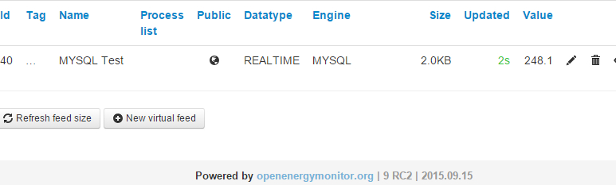

Hello,
I'd like to suggest to keep the ability to select for all the Input processes that create a feed the option for store in MYSQL engine.
Currently it only allows to select PHPFIWA, PHPFINA and PHPTIMESERIES.
I've a good mysql setup running for many months and do not want new feeds that i need to add to be on different engine beside mysql. It's difficult to mantain, backup, export and edit data.
For sure many people that own a server or has shared hosting accounts doesn't need the custom engines anyway as performance and space is not a issue in this case.
Thanks !
Re: EMONCMS: Allow New Input processes Feeds in MySQL engine as option from UI
Hi,
I agree with the comment above. I thought I had a way to enable the MySQL engine, but now it appears broken. The instructions I made that used to work are as follows.
To enable the selection of MySQL when setting Input's "Log to Feed", the following file must be edited:
/usr/share/emoncms/www/Modules/input/process_model.php
(the file might be in an alternate path on some systems).
In the file, under the public function get_process_list(), on the line starting with:
$list[1] = array(_("Log to feed").....
Add this at the end, after PHPTIMESERIES:
,ENGINE::MYSQL
What needs to be done to enable the choice of MySQL now?
Thanks!
Re: EMONCMS: Allow New Input processes Feeds in MySQL engine as option from UI
I can confirm the enable mysql bit is broken, its just the input process interface part that's not showing the mysql entry, everything else in the backend is there for it to work, Il try to have another look at this.
Re: EMONCMS: Allow New Input processes Feeds in MySQL engine as option from UI
Effectively 'Modules/input/process_model.php' needs to be edited (add 'ENGINE::MYSQL' to '$list[1] = array(_("Log to feed").....' ).
BUT ADDITIONALLY, under 'Modules/input/Views/input_view.php' the same change needs to be done.
Under '<span class="add-on feed-engine-lable">Feed engine: </span>', the new option for MYSQL needs to be added as follows '<option value=0 >MySQL TimeSeries (MYSQL)</option>'.
'option value=0' to match Modules/feed/feed_model.php, $this->engine array (approx line 60).
Now I have a new table in MySQL called 'feed_3', with 2 columns 'time' and 'data'.
The format of the timestamp is in seconds.
However I was not able to select an interval when selecting the input in emonCMS, nor give the feed a name.
I see that for that quite a bit of editing under MysqlTimeseries engine would be necessary.
Would be a recommendation for the future to focus more on using database engines (such as MySQL) instead of local .dat files.
This in the context of Big Data and cheap hosting with flexible databases.
Would be nice to see the functions of the libraries from PHPFIna, PHPFiwa etc combined under this new effort.
That way more can be done with the collected data.
What do you think ?
Re: EMONCMS: Allow New Input processes Feeds in MySQL engine as option from UI
I am running emoncms 8.3.2 and I applied the change to the additional file, input_view.php as you mentioned. Now I am able to select MySQL for data storage again.
I have not seen a feed interval option when using MySQL in the past, and am not sure of the purpose anyway. Finally, when creating a Log to Feed, I can give a feed name as required.
I prefer MySQL because I can edit and query data using phpMyAdmin as I wish.
Thank you!
Re: EMONCMS: Allow New Input processes Feeds in MySQL engine as option from UI
I take my comment back after reading:
https://github.com/openenergymonitor/documentation/blob/master/BuildingB...
While I didn't understand the point of using local .dat files at the start, the performance advantages are obvious.
I'll start looking into how to make monitoring the content of the .dat files easier, such as currently offered by PHP MyAdmin. This is a necessity for a project where as an admin, one would want to keep track of the different data supplied by the different users.
Re: EMONCMS: Allow New Input processes Feeds in MySQL engine as option from UI
Reading https://github.com/openenergymonitor/documentation/blob/master/BuildingBlocks/TimeSeries/history.md , there is a nice argument in favour of local .dat files.
However I think that scalability and stability could be an issue. Also the full potential of database technologies has not been explored. Indexing was omitted at the start and there are numerous ways to optimise resource usage by databases. Read http://www.wired.com/2014/04/twitter-manhattan/ for some inspiration. I am not saying that Open Energy Monitor needs to build up its own database technology, but that the option should be further explored before simply trying some new ideas. Databases have a proven track record.
Data manipulation and analysis by different tools are key components with Big Data (with the amount of data collected by the sensors, I think it fits this category). At least on my side I would like to do more with the collected data, like sharing among different users for benchmarking purposes.
Please rethink the option of looking at using a database engine again. Else numerous programming enthusiasts might look away from the Open Energy Monitor project.
Re: EMONCMS: Allow New Input processes Feeds in MySQL engine as option from UI
"Please rethink the option of looking at using a database engine again. Else numerous programming enthusiasts might look away from the Open Energy Monitor project."
Second that christophe_meyers.
mySQL already supports triggers.
http://stackoverflow.com/questions/12422288/mysql-massive-data-manipulat...
You could do essentialy time interval averaging on mySQL with logic on a stored procedure pre-processing data on each insert. Efectivelly creating a datawarehouse like model with different dimensions (daily, hourly, etc) for the same feed data.
Please rethink sql strategy...
[Multiple copies of this post have been deleted. Moderator (RW)]
Re: EMONCMS: Allow New Input processes Feeds in MySQL engine as option from UI
Thank you chaveiro for the insight on using MySQL triggers.
Yes all the new structural functionality offered by 'Fixed interval' and 'averaging time series' could indeed be integrated into MySQL by rethinking table structure and using triggers.
As mentioned being able to share data among users by quickly accessing and inter-exchanging average values is a necessity for the customization of my research project.
Speed is definitely a factor here too, as is the philosophy behind the new PHP engines under development.
The idea of these new engines is fine for hosting on the Raspberry Pi in my opinion, but as soon as a computer server is being used, I believe that more capabilities should be explored.
So please do not take what I write below as a critic [site moderators].
Currently am looking at incorporating InnoDB instead of purely MyISAM on the server.
The main incoming feed data would be written into a InnoDB table, especially if my system were to be large scale at an entire apartment level.
Data integrity is key and faulty databases is inacceptable.
But using triggers for the averaging tables, there MyISAM would be better.
As that data would be read more than written.
This is just to explain my idea, when I mention about rethinking the possibility of MySQL.
Always better to be constructive instead of only criticising.
Re: EMONCMS: Allow New Input processes Feeds in MySQL engine as option from UI
i can say +1 that its broken... sort of... mysql can be used if you select log to feed.... but if you want to do processing then yes mysql does not show up on the list
i discovered this today when i wanted to do power to kvh processing
and acc water pulses also
Re: EMONCMS: Allow New Input processes Feeds in MySQL engine as option from UI
same requirement, thanks
Re: EMONCMS: Allow New Input processes Feeds in MySQL engine as option from UI
Check out my new MySQLFiWa feed engine: https://github.com/chris-y-meyers/emoncms-addons/tree/master/MySQLFiWa
Feel free to comment/suggest modifications.
Re: EMONCMS: Allow New Input processes Feeds in MySQL engine as option from UI
Your link is wrong: https://github.com/chris-y-meyers/emoncms-addons/tree/master/MySQLFiWa
This is interesting.
You create a table for each time dimension/resolution.
Make it redis independable as rest of code and merge it on extended branch to be easily tested.
If you have any doubt just ask.
Re: EMONCMS: Allow New Input processes Feeds in MySQL engine as option from UI
Thanks for the positive feedback chaveiro !
A bit busy with the social study testing now, but will get back to you by end of this month, once I remove the Redis dependency.
Re: EMONCMS: Allow New Input processes Feeds in MySQL engine as option from UI
any chance that this will allow us to select all the input processors regardless what feed engine we use?
I plan to rewire my server "bedroller" box in a week or two and might do the software part done so i can use the input processing i used to do.
@trystan a small pryer is to have these included in install made by following this guide: https://github.com/emoncms/emoncms/blob/master/docs/LinuxInstall.md
i know you promote the use of the low write stuff, but mysql still has its justification, i share my data with a few others and there is nothing that beats direct access to the data via sql... of course i only give those few a read-only access
about the guide.. there are a few steps i could not figure on the ras-pi:
https://github.com/emoncms/emoncms/blob/master/docs/LinuxInstall.md#php-...
should i just skip this one?
and the log file mentioned last: https://github.com/emoncms/emoncms/blob/master/docs/LinuxInstall.md#install-logger
could not find that one.. any tips on how to find its location?
Re: EMONCMS: Allow New Input processes Feeds in MySQL engine as option from UI
Hi boelle, Extended version support SQL feed engines.
Re: EMONCMS: Allow New Input processes Feeds in MySQL engine as option from UI
where do i get that?
EDIT: https://github.com/emoncms/emoncms/tree/Extended
now going to eyeball it
Re: EMONCMS: Allow New Input processes Feeds in MySQL engine as option from UI
seems like what i have been looking for in a year or so...
last Q for now.... :
normally i install the full version with git clone https://github.com/emoncms/emoncms.git
what is the command to do the extended version?
Re: EMONCMS: Allow New Input processes Feeds in MySQL engine as option from UI
Git clone get it all, then you can switch branches with : git checkout branch_name
Do this on a new folder :
git clone https://github.com/emoncms/emoncms.git
git checkout Extended
Re: EMONCMS: Allow New Input processes Feeds in MySQL engine as option from UI
So there are no other commands to run after the checkout ?
Just asking as i dont know much about git and want to be sure that it updates the files to the extended version
Re: EMONCMS: Allow New Input processes Feeds in MySQL engine as option from UI
just got emocms installed and then did the checkout
there are no mysql as feed engine in there... so must have made an mistake but have no idea where
EDIT: Emoncms version: 8.5.0 XT
Re: EMONCMS: Allow New Input processes Feeds in MySQL engine as option from UI
On your instalation config file, coment the mysql line as below :
// Configure supported engines. Uncommented engines will not be available for user to create a new feed using it. Existing feeds engines still work.
'engines_hidden'=>array(
//ENGINE::MYSQL // 0
Engine::PHPTIMESERIES // 2
//,Engine::PHPFINA // 5
//,Engine::PHPFIWA // 6
),
Re: EMONCMS: Allow New Input processes Feeds in MySQL engine as option from UI
i tried that... i assume you mean settings.php in emoncms dir
that makes emoncms stop working
Re: EMONCMS: Allow New Input processes Feeds in MySQL engine as option from UI
Remove the comma in front of Engine::PHPTIMESERIES.
Re: EMONCMS: Allow New Input processes Feeds in MySQL engine as option from UI
that worked... thanks :-D
Re: EMONCMS: Allow New Input processes Feeds in MySQL engine as option from UI
been running for a while now and just discovered that multigraph in extended version is broken, i cant select any feed at all to display
Re: EMONCMS: Allow New Input processes Feeds in MySQL engine as option from UI
Hi, try to update to latest version.
Re: EMONCMS: Allow New Input processes Feeds in MySQL engine as option from UI
have it been updated since v8.5.0 ?
Re: EMONCMS: Allow New Input processes Feeds in MySQL engine as option from UI
It's updated regulary.
Execute this on your instalation root to get updated :
git pull
Re: EMONCMS: Allow New Input processes Feeds in MySQL engine as option from UI
Hi Boelle, are you using 8.5 XT version? If so, could you try, please, to create MAX or MIN feed and simply test if it works? In my installation on 8.5 (standard edition), when I create one of these, all inputs and feeds are frozen (no updated) until I remove back that MAX or MIN feed. If it works at XT, I will switch to this version, as MAX and MIN feeds are crucial for my usage. Thanks
Radek
Re: EMONCMS: Allow New Input processes Feeds in MySQL engine as option from UI
chaviero, I tried what you wrote to Boelle in above. My version now is 8.5.1 XT. BUT:
after this change from 8.5 to 8.5.1 XT I recognised new issue - whan I select Input to setup data processing, there are no any processes to be add available. That roll down list in empty now. What I should change now to get it available again? I have modified settings.php file as described in above.
'engines_hidden'=>array(
//ENGINE::MYSQL // 0
Engine::PHPTIMESERIES // 2
//,Engine::PHPFINA // 5
//,Engine::PHPFIWA // 6
),
Re: EMONCMS: Allow New Input processes Feeds in MySQL engine as option from UI
I'm not sure if i understand the problem, you have inputs but cant add a process to it because the dropdown is empty?
If you revert settings to default, it's ok ?
Re: EMONCMS: Allow New Input processes Feeds in MySQL engine as option from UI
no i use 8.51 XT....
Re: EMONCMS: Allow New Input processes Feeds in MySQL engine as option from UI
Whats to checkout command paramenter to switch back to standard edition?
Yes, you described the issue exactly. dropdown for add process in input is empty.
Re: EMONCMS: Allow New Input processes Feeds in MySQL engine as option from UI
chaveiro, I have used checkout master/Extend to switch between both versions. After switching "there and back" that input dropdown with processors is no more empty, so it solved itselves. But - when i use Input processor MAX value or MIN value in 8.5.1 XT versions, there appears red message
"No process description available for process 'Max value' with id '27'.
Add a description to Module\input\Views\process_info.js array.
What does it means and how to fix it?
Radek
Re: EMONCMS: Allow New Input processes Feeds in MySQL engine as option from UI
Radek - I just took a look at Module\input\Views\process_info.js and as the message says there is indeed "No process description available for process 'Max value' with id '27'" you could try as suggested and add one to see if it alters anything.
It's not the only one missing but it's hard to tell as they are not in order. It's not present in the other branches either but this branch may just be stricter with it's checks. worth ruling out either way though.
Paul
Re: EMONCMS: Allow New Input processes Feeds in MySQL engine as option from UI
Paul, I have added row:
'27':"Max daily value of input",
into process_info.js, but no change. The main reason, why Im doing this "research" is, there is no working process MAX value and MIN value at latest versions I tested (8.4, 8.5, 8.5.1 XT). And just MAX/MIN value is crucial for my project. At my old installation, which runs on 8.0.8, these functions work fine, but for my new project I would like to use slightly "younger" release of EMONCMS.
Radek
Re: EMONCMS: Allow New Input processes Feeds in MySQL engine as option from UI
OK, I have relog into EMONCMS (and deleted browser cache) and that red message for MAX value is there no more. BUT, when I want to create MAX value feed, item CREATE NEW is dead (no dropdown menu). Something is wrong with MAX (and MIN) value processor.
Re: EMONCMS: Allow New Input processes Feeds in MySQL engine as option from UI
Radek
Since you now seem to be experiencing the issue described by boelle regards the unpopulated dropdown box I will continue the discussion about Min and Max processors on your "MAX and MIN value feeds frozing whole EMONCMS" thread.
Paul
Re: EMONCMS: Allow New Input processes Feeds in MySQL engine as option from UI
doing the min and max processors... should that really be needed? i mean the way i understand the multigraph is that you create them in vis and select the feeds.... then in dashboard you select what vis you want
but really why was the multigraph not just made so you place is on the dashboard and select the feeds directly there?
easy to understand for everyone regardsless how experienced they are
Re: EMONCMS: Allow New Input processes Feeds in MySQL engine as option from UI
I never used them but what is the expected behavior of max and min value on the process list ?
On 8.5+ its set to work only with existing feeds of daily type in PHPTIMESERIES engine.
If you dont have any feed of that type then it doesn't list any, also PHPTIMESERIES is disabled on config.
Comment this line on your config to enable 'Create new' :
,Engine::PHPTIMESERIES // 2.
Re: EMONCMS: Allow New Input processes Feeds in MySQL engine as option from UI
Hi chaveiro, the min and max processes are for tracking the range of an input each day eg temperture highest and lowest for each day, since midnight like the daily totals.
could you check in on the MAX and MIN value feeds frozing whole EMONCMS thread as Radek has an issue with the min and max and identified they work in v8.4 but not v8.5 or extended. unless the getstartday() function is sidestepped.
Paul
Re: EMONCMS: Allow New Input processes Feeds in MySQL engine as option from UI
maybe this could relate to that dials do not work on the dashboard unless in edit mode?
Re: EMONCMS: Allow New Input processes Feeds in MySQL engine as option from UI
boelle can you share a live demo of the dials that do not work?
Re: EMONCMS: Allow New Input processes Feeds in MySQL engine as option from UI
not live as they do not show up on the dashboard other than in edit mode
but i use the cylinder symbol for my hot water cylinder and that is one that only shows up in edit mode
but i have taken 2 screen shots... when i click edit on the dashboard and one shot just before that
all feeds etc are public and the stuff that does work when not in edit mode also shows up on public dashboard
still on v8.5.1 XT
Re: EMONCMS: Allow New Input processes Feeds in MySQL engine as option from UI
I cant reproduce your problem.
Without a live demo i cant see whats wrong.
Re: EMONCMS: Allow New Input processes Feeds in MySQL engine as option from UI
you just got a live demo....
there is nothing more to see that the 2 pictures
but well i can live with this for a while
Re: EMONCMS: Allow New Input processes Feeds in MySQL engine as option from UI
Boelle, i dont want to see the pictures, i wanted to see the running code behind.
Try testing on other browser.
Re: EMONCMS: Allow New Input processes Feeds in MySQL engine as option from UI
testing on spartan browser... same thing...
will it be enough that you register an account on my system ??
Re: EMONCMS: Allow New Input processes Feeds in MySQL engine as option from UI
my dashboard: 80.167.214.72/emoncms/boelle
Re: EMONCMS: Allow New Input processes Feeds in MySQL engine as option from UI
so do you need more than an account to see what is going on?
Re: EMONCMS: Allow New Input processes Feeds in MySQL engine as option from UI
Boelle, any account will do as long as there is a dash board created that you have the issue.
Re: EMONCMS: Allow New Input processes Feeds in MySQL engine as option from UI
ok, will figure something when i'm back from interop in london
Re: EMONCMS: Allow New Input processes Feeds in MySQL engine as option from UI
Hi
Thanks for the Extended branch!
I was able to upgrade to it on my raspberry pi and keep years of mySQL historical data and the script I use that inputs directly to mySQL.
Br,
Jaco
Re: EMONCMS: Allow New Input processes Feeds in MySQL engine as option from UI
@chaveiro
about to create an account for you so that you can test and see the issue....
Re: EMONCMS: Allow New Input processes Feeds in MySQL engine as option from UI
http://80.167.214.72/emoncms/chaveiro
there should be a single dial there showing my solar production in watts. the feed will update every 5 mins
sadly you will only see the dial when you edit the dashboard
http://80.167.214.72/emoncms
username: chaveiro
pass: testing1234
Re: EMONCMS: Allow New Input processes Feeds in MySQL engine as option from UI
Boelle,
Go to Admin -> upgrade and check
See if there is something missing and apply changes if it is.
Re: EMONCMS: Allow New Input processes Feeds in MySQL engine as option from UI
hehe...
Success: - the following changes have been applied
Database schema
ALTER TABLE `dashboard` ADD `backgroundcolor` varchar(6) NOT NULL DEFAULT 'EDF7FC'
works now :-D
Re: EMONCMS: Allow New Input processes Feeds in MySQL engine as option from UI
after update from 8.4 to 8.5XT I can't see all the process list in the input tab.
also I see new node with same key of existing one, the newer where updated, the older not.
I rollback emoncms folder but the the second problem still exist.
I rollback also mysqlmetadata, now I restore my emoncms
Re: EMONCMS: Allow New Input processes Feeds in MySQL engine as option from UI
Why didn't you update to v9?
V9 is now the default version.
Paul
Re: EMONCMS: Allow New Input processes Feeds in MySQL engine as option from UI
because I read that v9 does not support anymore mysql... I would like to upgrade but keep my mysql feeds
Re: EMONCMS: Allow New Input processes Feeds in MySQL engine as option from UI
v9 does support MYSQL.

Paul
Re: EMONCMS: Allow New Input processes Feeds in MySQL engine as option from UI
I will try v9
Re: EMONCMS: Allow New Input processes Feeds in MySQL engine as option from UI
I tested v9, good work! I can see my mysql feeds.
now.. how to change sample of a running feed? I would slow sample data to mysql (now every 10 sec).